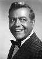
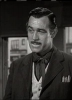

Country:United States, 1 minutes
Spoken languages:English
Genres:Crime, Horror, Sci-Fi
Director(s):Jack Pollexfen
Writer(s):Vy Russell, Sue Dwiggins
Video Codec:Unknown
Number: 81


Certification:Approved
Storyline:
Charles "The Butcher" Benton, a brutal death row inmate gets double-crossed by his crooked lawyer. He gets his chance for revenge when, after he's been executed, a bizarre experiment brings him back to life and more deadly than ever.
Cast:  

Medium: Original DVD,
Comments: Part of: 100 Greatest Horror Classics
Loaned: No
Aspect ratio: Unknown